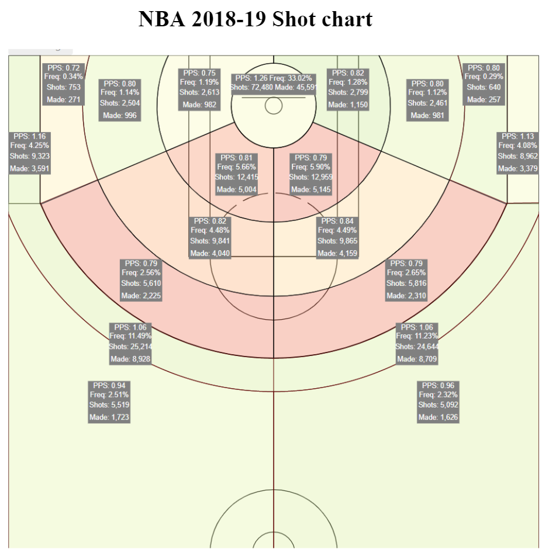

Should the NBA have a 4 point line?
By Andrew Zhang, Arnav Gupta, Dominic de Bettencourt | March 30, 2021

Should the NBA have a 4 point line?
In recent years, the NBA has experienced a boom in 3-point shooting with players like Stephen Curry and Damian Lillard, challenging what is considered a “bad shot”. Pulling up from 30 feet has become routine rather than abnormal. For reference, in the 2013-14 regular season (the season before Curry’s first MVP season), there were 3814 shots from 27 feet and further. With the advent of Curry and more game-changers, in the 2018-19 season NBA players shot 10611 shots from this deep range. Gameplans and defensive tactics have shifted: one example would be fast-breaks, where many shooters now drift to the 3-point line instead of driving for a layup.
As the range of sharpshooters continually expands, these changes beg the question of whether a new 4 point line should be implemented to keep up. The idea has been floated around by journalists as a farfetched dream, but would it be feasible?
To inform our analysis, we used shot charts from nbashotcharts.com. We filtered results for specific players and/or specific seasons. The court is divided into zones, from near the rim to low-post, midrange, 3-point, and long-range 3 point shots from 27 feet out and considered these deep threes as the hypothetical boundary for the 4 point line. The website calculated points per shot (PPS) and frequency for the quantity of shots in each zone, and we recalculated PPS based on the new 4-point shot, multiplying the current PPS by 4/3.
For example, in Stephen Curry’s prolific unanimous-MVP season in 2015-16, he shot 188 shots from 27+ feet at a 45.2% clip. His PPS would be 1.81 instead if these points were 4 point shots, compared to 1.36 for 3 point shots inside of 27 feet. This is a drastic change and would shift the distribution of shots for sharpshooters like Curry because they would gravitate to shots that would net more points in the long term.
Stephen Curry 15-16
The same trend goes for the entire NBA, which shot .95 PPS from 27+ feet in 2018-19. Adjusted for the 4 point line, this would be 1.26 PPS, meaning this new 4-point shot would be the most efficient shot on the court.
NBA 2018-19
NBA 2018-19 Shot chart
However, just because this is an interesting thought experiment doesn’t mean it should actually be implemented. If a 4-point shot existed, a 3-pointer might slowly become obsolete because shooters only need to move out several feet to earn 33% more points for similar accuracy. In the NBA there’s been a similar trend with mid-range jumpers, and with the rise of Moreyball and advanced analytics there’s an emphasis on taking the most valuable shots, which by PPS is the 3-pointer. However, to counter this, there are many players that still excel at the midrange jumper (à la Kevin Durant or Demar Derozan), so it’s not unreasonable to expect the 3-point shot to still be viable.
With extra defensive attention to the 4-point and 3-point line, this would open up more opportunities in the paint and midrange, which skilled players could take advantage of. We can visualize this trend over the past 8 seasons for the 3-point era (excluding the 2019-20 season impacted by COVID and the current 2020-21 season). In 2011-12 the frequency of midrange shots was 0.45 while that of all 3-point shots was 0.23. This divide has flipped in the last 8 seasons in an explosion of scoring: in the 2018-19 season, 31% of all field goal attempts were midrange shots, while 36% of field goals attempted were 3-pointers. While the frequency for midrange shots decreased, the PPS for these field goals actually increased from 0.77 to 0.81. PPS for shots near the rim also grew during this timespan. This empirical evidence supports the fact that the advent of the 3-point era is correlated with an uptick in offensive efficiency across the board.
Much like the addition of the 3-point line in 1979-80, which was criticized back in the day but now an integral part of the game, a 4-point line could also open up scoring more and add another facet to the game we love. More dramatic comebacks would be possible, and possibly more strategy at the end of close games with multiple ways to score.
To see how the 4-point line could play out in the NBA, we can look at the Harlem Globetrotters and Ice Cube’s Big3 League, which have all implemented variations of the 4-point line (the latter has 4-point midline circles where shots from inside would count for 4 points). The NBA All-Star Game in 2019 also had a 4-point line, with rapper and hip-hop icon Quavious Marshall (aka Quavo) famously icing the game with a 4-pointer with 20 seconds left.
In conclusion, the addition of a 4-point line would have both pros and cons. The NBA would have to weigh the benefit of more explosive scoring with the downside of jacking up shots from halfcourt and radically changing the game of basketball. Middle ground could be found, though. One example is enforcing a 4-point line only for the last 2 minutes of every half, to increase the likelihood of dramatic comebacks in case the trailing team gets hot from 4. The NBA could also try implementing 4-pointers for exhibition games like the All-Star Game, or test run during the preseason. Whatever the eventual decision, the concept of a 4-pointer is definitely a thought-provoking and game-changing idea that the NBA should consider.